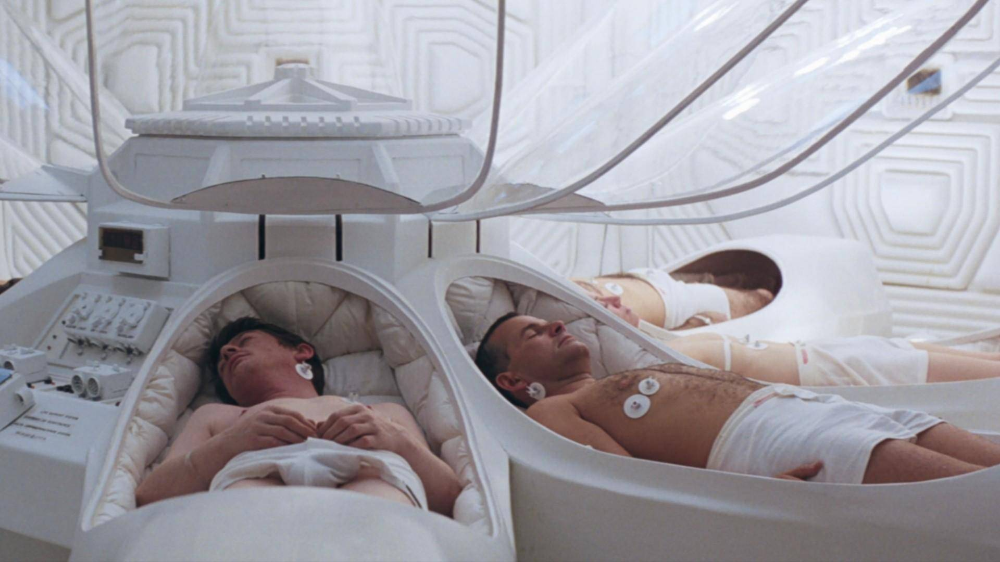
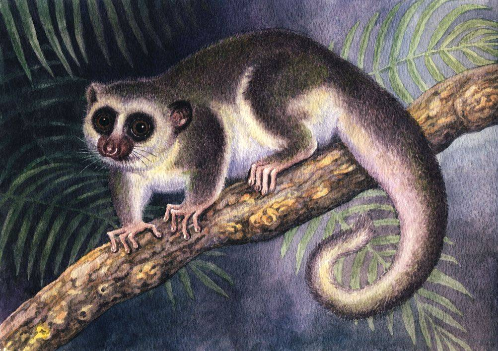
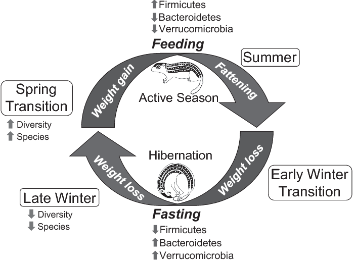
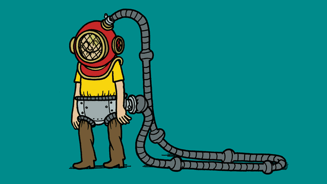
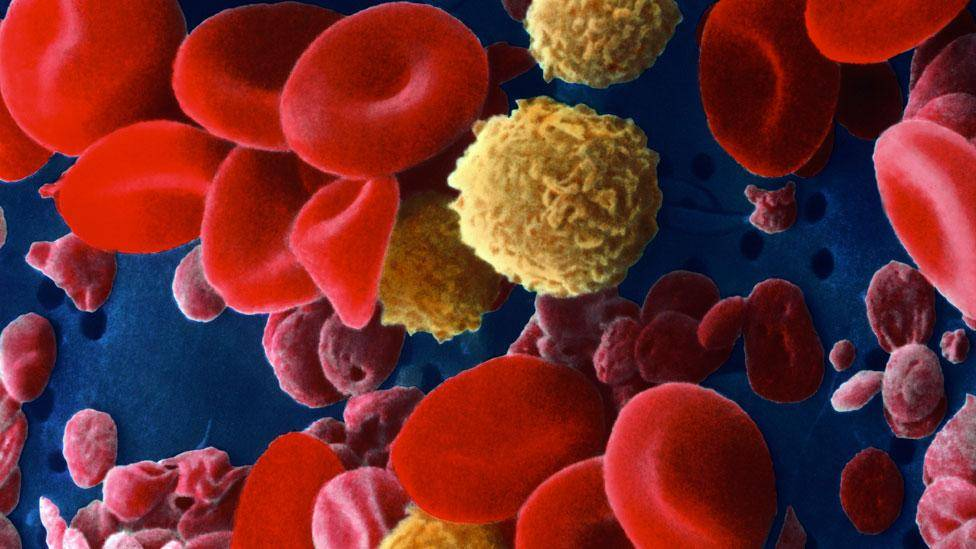
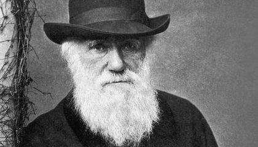
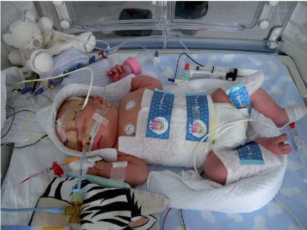
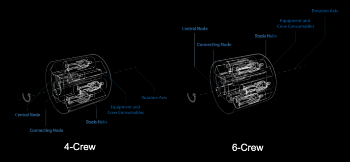

吸一口「屁」就能冬眠？對於冬眠的認知你可能需要改變了

 人類能冬眠嗎？ 先別著急回答，也先不要鄙視我問出這種連小學生都能回答的問題。 1900 年，《英國醫學雜誌》就曾經發表論文，稱找到了能夠冬眠的人類。 根據論文，俄羅斯普斯科夫州有這麼一羣農民，每到冬天，就需要面對食物短缺的困境。於是每到冬天，他們就會退回到室內，進入他們稱爲「lotska」的深度睡眠。在進入「lotska」之後，他們每天只會醒來一次很短暫的時間，而且只需要吃一點點硬麵包，就能度過一整個冬天。
 人類不會冬眠？不，基因決定了你有冬眠的能力
人們對於人類能不能冬眠這個問題的認知，更多是停留在人類並非冷血動物，不能冬眠。實際上，已經越來越多科學家相信，人類其實是具有冬眠的「潛能」。
因爲從基因的角度上看，我們似乎具備冬眠所需要的一切東西。
生活在馬達加斯加的胖尾狐尾猴每年會在旱季休眠八個月，並且依靠存儲在尾巴中的脂肪生存下來。
人類不會冬眠？不，基因決定了你有冬眠的能力
人們對於人類能不能冬眠這個問題的認知，更多是停留在人類並非冷血動物，不能冬眠。實際上，已經越來越多科學家相信，人類其實是具有冬眠的「潛能」。
因爲從基因的角度上看，我們似乎具備冬眠所需要的一切東西。
生活在馬達加斯加的胖尾狐尾猴每年會在旱季休眠八個月，並且依靠存儲在尾巴中的脂肪生存下來。
 同屬靈長類動物的胖尾狐尾猴其實有 98% 的基因是和我們一樣的，科學家並不認爲決定冬眠的基因存在於另外的 2% 當中。 相反，他們認爲這些胖尾狐尾猴的基因中有著那麼一個「開關」，可以控制胖尾狐尾猴進入冬眠。 舉個例子，胖尾狐尾猴在進入冬眠前，會胡吃海喝，並將儘量多的脂肪儲藏在尾巴當中。狐尾猴在準備冬眠時，它們可以通過某些方法來打開這樣一個「開關」激活解脂肪所涉及的基因，同時關閉處理碳水化合物的基因。
 美國德克薩斯大學西南醫學中心博士研究員威爾·伊斯拉埃爾森同樣在研究冬眠和基因的關係，他認爲相同的動物不一定擁有專屬的冬眠基因。恰恰相反，各種冬眠動物很可能擁有相同的與冬眠有關的基因，只不過，每個物種使用這些基因的方式略有不同。他表示： 如果能夠搞清楚這些基因的生物機理，以及這些動物如何調整這些基因，我們就能以醫學爲目的，在人類身上操縱它們。 如果能夠搞清楚這些基因的生物機理，以及這些動物如何調整這些基因，我們就能以醫學爲目的，在人類身上操縱它們。 潛能是有了，那麼怎麼把它激發出來？ 實際上，在過去幾十年的研究裡面，科學家一直在探尋人工誘導進入冬眠的各種方法。但有一種方法，可能是你萬萬想不到的。 那就是用「屁」而且不臭還不行那種。 屁之所以臭，是因爲裡面含有硫化氫，而硫化氫，也是能夠引導你進入冬眠的一樣「祕密武器」。
 研究人類冬眠的科學家發現了硫化氫可以讓細胞進入暫停代謝的狀態。 於是科學家就讓同爲非冬眠動物的小白鼠暴露在一定濃度的硫化氫當中，隨即小白鼠就進入到了一種類似於假死的狀態當中，並在一般情況下能夠致死的低氧環境中存活了數個小時。 根據科學家的解釋，硫化氫能夠與細胞線粒體當中的一種關鍵酶相結合。 我們都知道，被稱爲「細胞動力車間」的線粒體是細胞中產生化學能的結構，而當硫化氫和它分泌的酶結合時，它們就會阻斷氧氣，從而讓線粒體失去供能的作用，最終降低新陳代謝並觸發冬眠。
 而在科學家移除硫化氫之後，小白鼠也能夠慢慢醒過來，並且一切身體指標均屬正常，也沒有出現行爲上或者精神系統上的問題。 不過，要將「屁」應用在人類冬眠上，還有相當一段距離。 有這麼一段未經證實的歷史奇聞，稱達爾文獎曾經檢驗過一名死者，這位平時以豆類和捲心菜爲食的奇人，最終死在了自己的牀上。屍檢報告顯示，他血液中含有過量的硫化氫。於是人們認爲，因爲房間狹小且密封，這位奇人是死於吸入自己放出的屁。
 當然，故事的真實性存疑，但硫化氫確實是能夠致命的。 所以科學家想要安全地通過硫化氫激活人體的這個「開關」要解決的問題還有很多。不過，科學家也從中獲得了啓發，著手在研究怎麼通過這個方法讓人體進入「局部冬眠」，也就是讓器官進入低代謝狀態，讓待移植的器官擁有更長的「保質期」。 大費周章，可不止爲了睡個懶覺 1999 年，一位名爲 Anna Bagenholm 的放射科醫生在挪威滑雪時不慎掉入了冰凍的溪流當中。在被拯救出來時，她已經在冰水裡面呆了足足 80 分鐘。 在被送到醫院後，她已經沒有了呼吸、沒有了脈搏，體溫也已經下降到了 13.7 攝氏度，基本可以宣告死亡。但奇蹟發生了，她最終還是被搶救了回來，而且她的案例還被稱爲「醫學奇蹟」記錄在了《柳葉刀》雜誌上。 2006 年，又有一位名叫打越三敬的日本小伙子在遊玩時失足跌落了雪山間，在斷水斷糧的情況下，他居然熬過了三周，並最終獲救。 對於上述兩個奇蹟生還的例子，他們的主治醫生，都認爲他們之所以能保住性命，是因爲身體進入了類冬眠的狀態。
而實際上，人類對於冬眠的正式研究，其實比這裡還要早，但目的和醫學並不相關。 20 世紀 50 年代蘇美之間的太空競賽愈演愈烈。爲了讓人類可以在太空中走得更遠，NASA 撥出大量資金讓生物學家研究如何讓太空人可以進入冬眠狀態來度過漫長的太空旅程。 當時的研究領軍人物爲詹姆斯·洛夫洛克。雖然實驗對象還是只老鼠，但是出於對這位「志願者」足夠的尊重，他還是爲其量身訂造了一個「休眠倉」。
最終，實驗團隊還是實現了讓這位「志願者」老鼠在「休眠倉」中進入類冬眠的假死狀態，而後再回復活力。 但可惜的是，隨著太空競賽的結束，NASA 對於人體冬眠的興趣也逐漸降低了，資金的投入自然也就暫停了，團隊研究的步伐也被迫暫停與此。不過，人類對於「冬眠」的探索卻並沒有止步。 Riley Joice 是英國每年過千名患有新生兒缺氧的兒童之一，但幸運的是，他安然無恙地出院回家了。 因爲 Joice 是第一個接受新生兒缺氧低溫治療的兒童。 布里斯托大學的 Marianne Thoressen 自 90 年代以來，就一直在研究低溫治療對缺氧嬰兒的保護作用，並最終在 Joice 上實現了願望。
 在接受低溫治療時，嬰兒的體溫會被逐漸降低到 33 攝氏度達 72 小時，以減少嬰兒體內器官尤其是大腦的代謝速率，期間再配合氙氣治療以降低由於缺氧而對器官造成的影響。 而在 Joice 成功治療的先例後，英國也越來越多患有新生兒缺氧的嬰兒獲批進行低溫治療。 雖然目前人類還未能真正地實現冬眠，但是在追求冬眠這件事上，人類倒是學到了不少有用的東西。 低溫療法就是其中一種。 昏迷了 6 年之後醒來的車王舒馬赫在接受治療期間，也是靠低溫治療減少長時間的昏迷對大腦的影響。 近年來，突發性心臟病開始引起大家的重視。心臟停搏的死亡率高，即便倖存對大腦也會造成較大傷害。而低溫治療，則能有效地爲醫生爭取搶救時間，也能大幅度地減少對大腦等器官的損傷。
「冬眠」可以爲生命帶來希望，但同時也能用讓生命結束得更有尊嚴。 現在，已經有晚期癌症病患者的家屬，會選擇通過「人工冬眠」來幫助患者擺脫痛苦。 與安樂死不同，「人工冬眠」並不會結束患者的生命。在癌症晚期，患者結束一切積極的治療，並且常規鎮痛劑已經失效的情況下，患者可以選擇通過「人工冬眠」進入超長時間且無法喚醒的深度睡眠。 這樣一來，患者就可以在睡夢中擺脫任何痛苦，靜待疾病結束生命。
另外，各種冬眠的動物，還爲病理學家提供了不少研究的新方向。例如研究它們基因，就可以研究如何精準地控制脂肪的代謝；研究它們的血液循環量，就可以用於指導中風時，如何用更好的治療方式來保護大腦；研究它們在冬眠時怎麼避免肌肉退化，可以改善長年臥牀病人的生活。 當然，人類研究「冬眠」的終極目的，還是回到了最初的起點：讓人類真正進入冬眠，讓生命「冷藏」，以探索更遠的宇宙。 ESA（歐洲航天局）在日前宣布稱，已經掌握到了辦法，讓人類真正進入「冬眠」狀態的方法。 雖然 ESA 並沒有公布具體的方法，也沒有解釋「如何保證冬眠技術的絕對安全」、「如何太空人在長期睡眠之後生理和心理都能保持完好的狀態」等問題。但 ESA 這次似乎抱有相當大的信心，一改之前認爲不可能將人類送往火星的態度，表示將會在 20 年內，實現人類冬眠，並將人類帶向火星。 爲了表明決心，ESA 甚至還已經完成了「休眠倉」的設計草圖，做好了一副蓄勢待發的架勢。
 那麼我們回到文章開頭那個問題，人類能進入冬眠嗎？ 目前還真的未能讓人類進入冬眠，但起碼我們在研究的路上，距離這個目標已經越來越近，也從中獲取了不少寶貴的東西。 而且我相信隨著研究脈絡的逐漸清晰，「一覺睡到明年」或許在將來還真不只是一個玩笑。